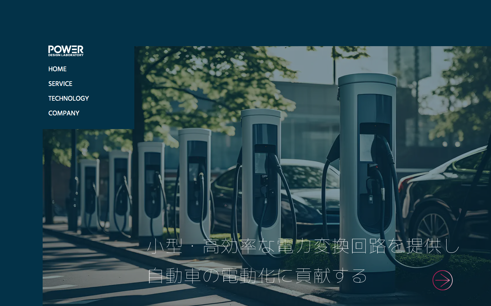
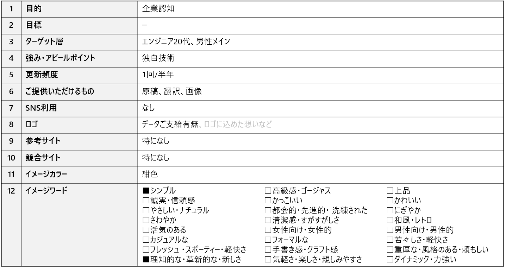
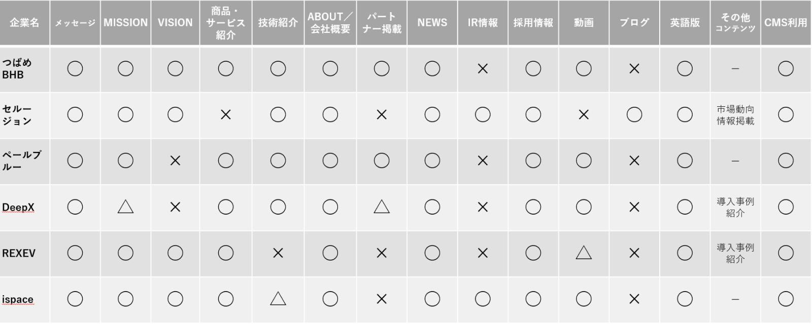
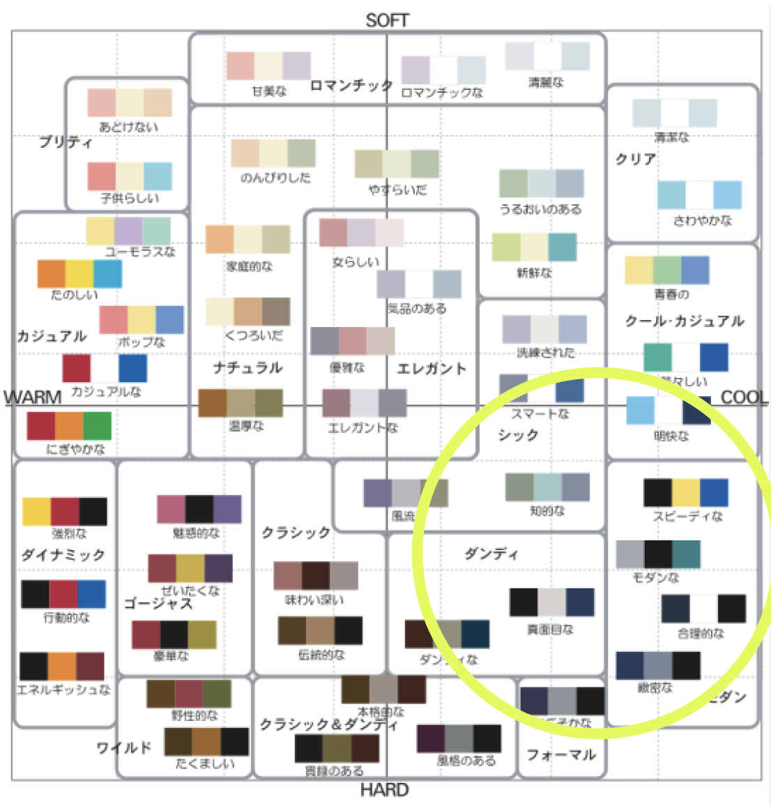
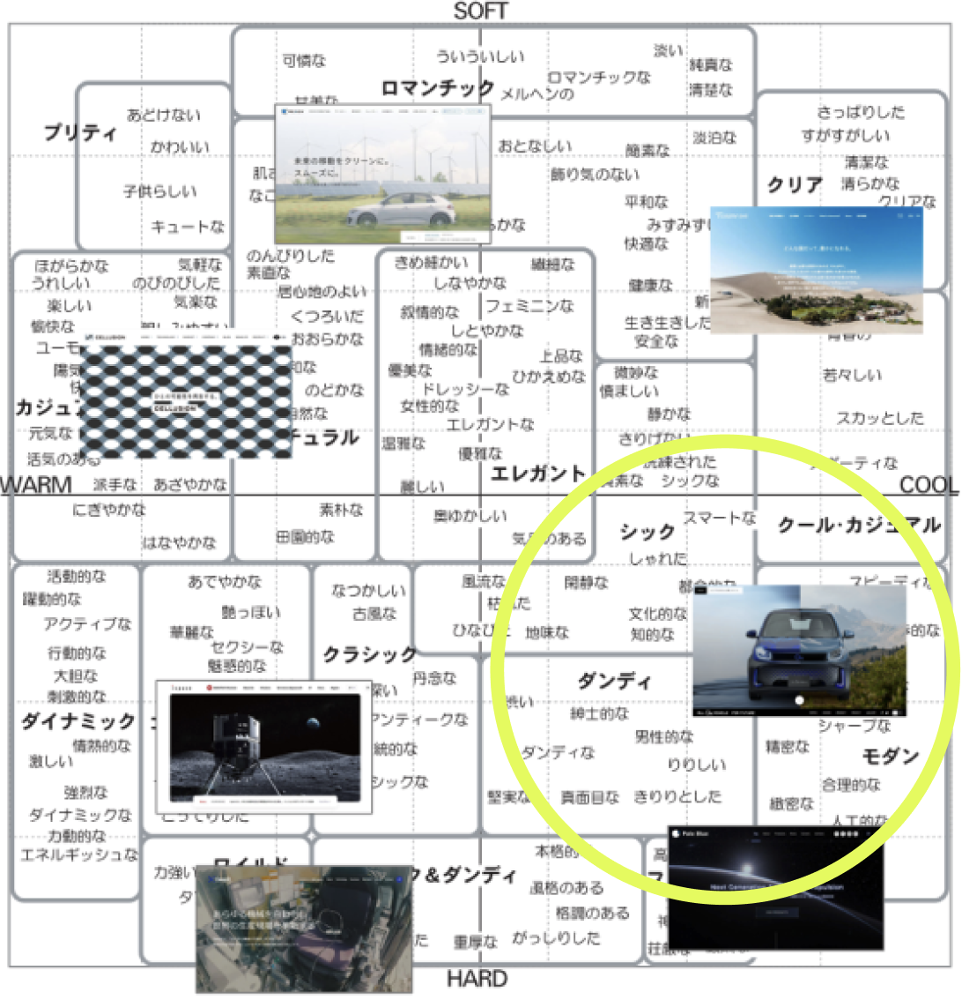
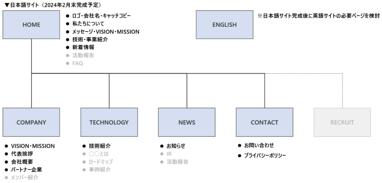
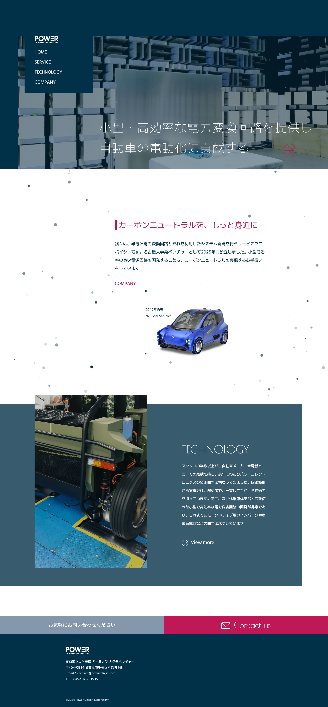
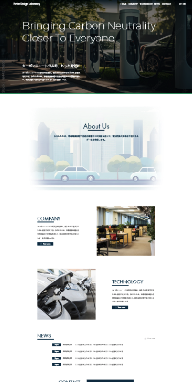

Power Design Laboratory
DAD 2024.2-2024.4 3ヶ月 Direction / Web Design / Writing
PJ体制: Designer 1名（自身） / Engineer 1名 / 営業 1名
| クライアント | 株式会社 Power Design Laboratory |
| 依頼内容 | Webサイトの新規作成 |
| 目的 | 2023年11月に起業し、会社の情報を発信する名詞代わりとなるサイトが欲しい |
| 課題 | 企業認知 |
| ターゲット | エンジニア20代、男性 |
| 事前情報 | 環境省のプロジェクト専用チームサイトを立ち上げた過去実績からのご依頼 |
| 先行事例 | All GaN Vehicle. |

ヒアリング資料
プロセス
近しい業種のスタートアップ企業サイトをベンチマーク
掲載要素比較表

掲載コンテンツすり合わせ
- メッセージ、MISSION、VISIONを明確に打ち出す
- 代表者、関係者の顔が見えるようにする
- パートナーシップのロゴを掲載する
- 英語版の作成提案
デザインイメージ認識すり合わせ

カラーイメージスケール（3色）

言語イメージスケール
情報設計｜サイトマップ案

※グレー部分は公開後にコンテンツ追加
デザイン｜2案提案
キャッチコピーは極細のフォントで静謐さを表現。ファーストビューのKVをゆったり入れ替えアカデミックな空気感を演出。サービスページへの誘導アニメーションも派手すぎないが存在感があるよう動きを抑えた。カンパニーページ誘導エリアはパーティクルJSで二酸化炭素を表現。
メインカラー
#003149
アクセントカラー
#BE1956
https://powerdsgn.com/


工夫した点・苦労した点
- テキストや写真原稿がリリース予定1週間前になっても出ておらず、生成AIを活用してなんとか形にした。原稿がなくても先行してデザインイメージのチェックを行うことができた。
- 個性的なレイアウトにしたので、レスポンシブ対応が少し難しかった。
成果と振り返り
- MTGの中で少し個性を出したいとおっしゃっていたので、メニューを左上に置き追従するタイプにしたところクライアントから好評だった。
- 矢印部分はlottiefilesでアニメーション作成した。DAD内では動きのあるものはエンジニアがつくるらしく、デザイナーが作ること自体珍しがられる&工数短縮になり喜んでもらえた。
- Figmaが導入されていなかった為このプロジェクトでXDからの乗り換えを提案し、社内で採用された。